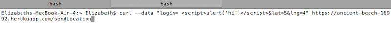
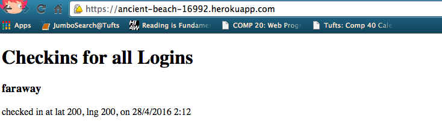

COMP20: Assignment 4
by: Elizabeth Bishop
Last modified: April 25, 2016
Introduction:
This document assesses the security of Elias's "Historic Landmarks"
application. "Historic Landmarks" is a web application that "maintains
location check-ins (login, latitute, and longitude)... and serves data
on the nearest U.S. historic landmarks within a mile of where you are."
"Historic Landmarks" can be connected with a web page that retrieves and
displays the locations of other people who checked-in to the app and the
nearest historic landmarks on a map (using the Google Maps API). The
application, however, is not secure and can be manipulated by users.
This report will outline such vulnerabilities.
Elias's app can be found
here.
Methodology:
For my first, third, and fourth bullet points, I used "curl" from my
terminal, to send different sorts of unexpected data to Elias's server.
I sent all data using the expected format of providing a login variable,
a latitude variable, and a longitude variable, but I gave one of these
variables an unexpected value. For the second bullet point, I inserted
an unexpected field into the url of one of the pages of the web
application. Because the app does not check to make sure that the url
or posted data meets certain expectations, sending unexpected data
allowed me to pinpoint several vulnerabilities.
Abstract of Findings:
Because this app was written without taking into security into
account, it leaves its contents and information vulnerable. This means
that people can potentially alter the body of the app's web pages (and
cause it to contain malicious content), query the app's information in
unexpected ways (potentially allowing private information to be
exposed), and generally attack the application and its users. These
scenarios, and recommendations as to how they should be resolved, are
listed below.
Description of Three Issues that Were Found:
Injection of HTML
- Location: /sendLocation POST requests
- Severity of Issue: High. If someone were to inject
inappropriate content into your database, it would be
displayed on both your index page and your /checkins.json
page. It would severely tarnish the reputation of your
application.
- Description of Issue: In a post request, anyone can send
to the app data in the form of "login=X&lat=X&lng=X" The
user may send any data through this form: words, numbers,
even images. The below image shows the data that I entered
when I entered my login as an image.
- Proof of vulnerability: The below image shows one of
the results of curl statement depicted above. Because
the image that I sent was accepted by the application,
and stored in the application's database, it can be
viewed by anyone visiting the application's index page
(or its /checkins.json page). While the below image is
cute, it is not hard to imagine the other sorts of
malicious things people might mangle your html with.
- Resolution: To resolve this issue, the server needs to
assert that the data is receiving from a /sendLocation POST
request meets certain standards. For instance, there could be
a statement that translates "<" and ">" characters into
"(ampersand character)lt" and "(ampersand character)gt."
Injection of Mongo Operator
- Location: /checkins.json
- Severity of Issue: Low. At the moment, all of the data
accessible from the /checkins.json page can also be viewed
in the index page of the application. However, if the app
were ever to be changed to collect more user information,
not displayed on the index page, this vulnerability would
make the information accessible to the public.
- Description of Issue: If you look at the below image,
you can see the way that I altered the URL to contain
the mongo operator [$ne] (which stands for not equals)
"login[$ne]=mchowgrading". The page /checkins.json
is supposed to return all records for a given login.
However, by using injecting [$ne], the page can be
manipulated to provide other kinds of data. For
instance, it can return all data that doesn't equal
a certain login.
- Proof of vulnerability: As can be seen below, sending
"login[$ne]=mchowgrading" as a query string to
/checkins.json returns all of the information for
logins that are not "mchowgrading."
- Resolution: By looking at the source code, I can see that
the server is storing the query string as a Javascript object.
I recommend that this data is instead stored as a string, so
that it cannot be used as a mongo query.
Cross-site Scripting
- Location: /sendLocation POST requests
- Severity of Issue: High. Cross site scripting is very
dangerous because it can be used to steal user information,
redirect web pages to malicious web pages, and do other
bad things that are sure to drive users away from your
application.
- Description of Issue: Similarly to the HTML injection
bullet point, cross-site scripting can take advantage of
the fact that anyone can send
to the app data in the form of "login=X&lat=X&lng=X" The
user may send any data through this form: words, numbers,
even images. In a cross-site scripting attack, the
attacker sends a script to the app. This script is then
stored in the database, and eventually displayed on the
home page of the application. In that HTML page, the
script, which the application expects to be a login or
a latitude or longitude value, is then run from that page.

- Proof of vulnerability: The below image shows what happens
when you send a simple script to the page. This script
causes an annoying pop up, but, as stated earlier, in a
real attack could instead contain something much more
troublesome.
- Resolution: I recommend the same resolution as I would for
the issue of HTML injection. You could write an assertion
that checks the data before it is entered in the database,
and translates "<" and ">" tags to
"(ampersand character)lt" and "(ampersand character)gt."
Sending data incompatable with Google Maps API
- Location: /sendLocation POST requests
- Severity of Issue: Medium. This issue causes the server
send an incomprehensible error message, and behaves
in a way that does not meet specifications.
An unreliable application that creates unexpected
results is not the kind of application that you should
provide to your users if you want them to continue to
use your application.
- Description of Issue: When latitude or longitude
values exceed what is possible (the maximum possible
latitude is 90 and the maximum possible longitude is
180), the server crashes. The client that sent the data
received an odd response (see image below), and not the
coordinates of other check-ins and landmarks. However,
the bad data is still entered into the database and still
appears when a client accesses the index page and can be
through a query on the /checkins.json page.
- Proof of vulnerability: The server crashing can be seen
in the image depicted below. I sent the server a latitude
of 200 and a longitude of 200, and received back a
strange error message that was not specified by Elias.
Additionally, if you look at the second image, you can see
that the data, is stored in the database, despite the fact
that the expected json array response of check-ins and
landmarks is not returned.


- Resolution: When accepting data from the POST request,
check to make sure that the longitude and latitude values are
within the possible range. If they are not, send the error
message that is sent when the user provides other sorts of bad
data.
Conclusion:
Paying attention to security is very important because otherwise
people with bad intensions can distort the information that your users
receive, and may even put your users at risk of clicking through to
malicious websites. Poor attention to security may also allow people
to access your or your user's personal information. Please be careful!
Fixing these issues will not cost much and will make your application
more reliable and pleasing to your users. I think that you could solve
them yourself, and thus cost yourself nothing, if you just spend some
time searching the internet for advice as to how to code the solutions
recommended above.